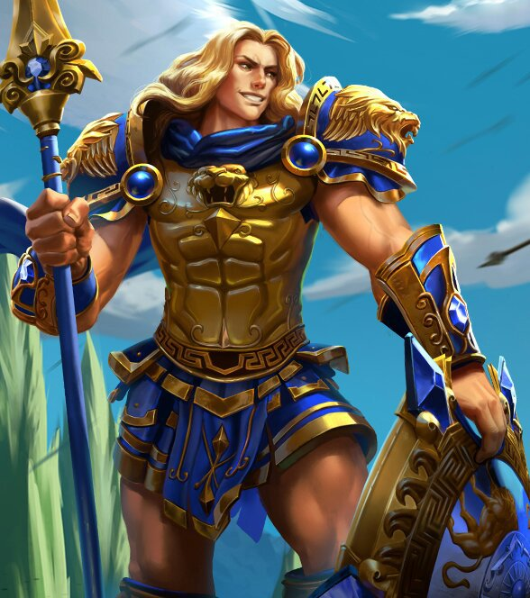
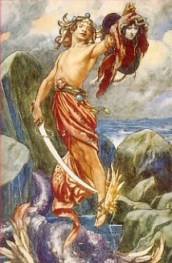
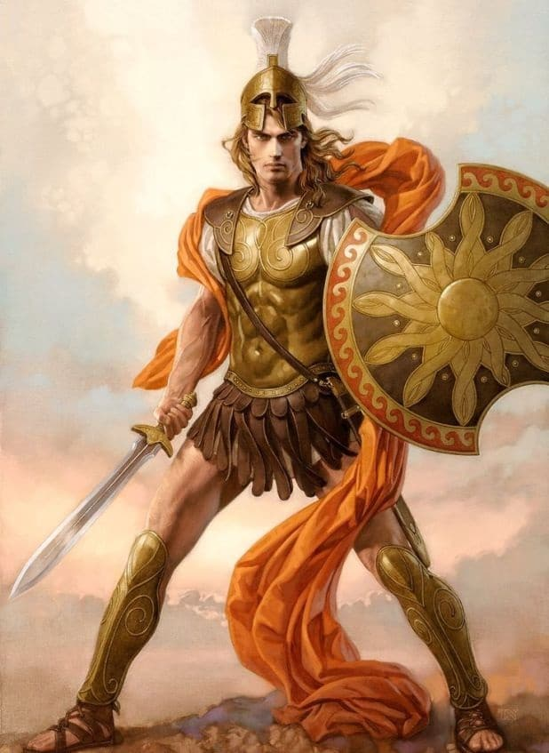

Heroes
Aquiles
Para la mitología griega, Aquiles fue el principal héroe de la Guerra de Troya y el más fuerte, rápido y bello guerrero de la Iliada de Homero. Hijo de Peleo, rey de los Mirmidones en Ftia, y de Tetis, una ninfa marina, Aquiles era considerado invencible, pero no inmortal.
Para explicar la invulnerabilidad de Aquiles, existen dos versiones: una nos dice cuando nació, su madre Tetis lo sostuvo del talón y lo sumergió en el río Estigia para volverlo inmortal, pero su talón jamás tocó las aguas, permaneciendo vulnerable como el de cualquier otro mortal.
Otra versión cuenta que Tetis lo ponía al fuego del hogar para quemar las partes mortales de su cuerpo y luego ungía al niño con ambrosía, hasta que fue interrumpida por Peleo, quien le arrebató al niño de sus manos y éste quedó con un talón carbonizado. Enfurecida, Tetis los abandonó a ambos y Peleo sustituyó el talón quemado de Aquiles por la taba del gigante Dámiso, famoso por su gran velocidad. Esta versión también comenta por qué le llamaban “el de los pies ligeros”.
Aquiles creció junto a Patroclo en el monte Pelión, donde se alimentaba de fieros jabalíes, entrañas de león y médula de oso para aumentar su valentía. También aprendió el tiro con arco, el arte de la elocuencia y el canto, y la curación de las heridas. Si bien la Ilíada de Homero es el relato más famoso de las hazañas de Aquiles en la Guerra de Troya, ésta solamente abarca unas pocas semanas de la guerra y no narra la muerte de Aquiles.
Durante una de las batallas, los troyanos lograron hacer retroceder a las fuerzas griegas y asaltaron sus barcos. Dirigidos por el príncipe Héctor, los griegos parecían estar a punto de caer, hasta que Patroclo logró repeler a los troyanos de las playas, pero murió a manos de Héctor antes de que lograsen tomar la ciudad de Troya.
Cuando Aquiles supo la noticia, la ira y el dolor lo invadieron de tal manera que estuvo a punto de quitarse la vida. Patroclo fue velado toda la noche, y Aquiles juró que vengaría su muerte. Le pidió a su madre una nueva y más poderosa armadura y salió al campo de combate, donde mató a Héctor y luego ató su cuerpo inerte a su carro, arrastrándolo por nueve días en torno a los muros de Troya, sin permitir que tuviera los ritos funerales. Hasta que la ayuda del dios Hermes, el rey Príamo lo convenció a Aquiles de que le permitiese celebrar los ritos funerarios de su hijo.
El poderoso Aquiles, aparentemente invencible, finalmente fue derrotado por el príncipe troyano Paris, quien le disparó una flecha envenenada –según algunas versiones- dirigida por el dios Apolo al talón izquierdo y lo mató. Sus restos fueron mezclados con los de su gran amigo Patroclo y su mítica armadura abrió una disputa entre Ulises y Áyax el Grande, primo mayor de Aquiles. Luego su madre Tetis consiguió para su hijo la inmortalidad y esté vivió en la isla de Leuce en la desembocadura del Danubio, donde se le rindió culto
Perseo
Perseo era un héroe griego antiguo. Su madre era Danae, la hija de Acrisio, el Rey de Argos. Cuando una profecía le reveló a Acrisio que su nieto lo mataría, Acrisio encarceló a su hija Danae para mantenerla casta. Zeus, sin embargo, engañó a las precauciones de Acrisio al entrar la prisión disfrazado como una lluvia de oro. Cuando Acrisio descubrió que Danae había dado a luz a Perseo, hizo que tiraran a la madre y al hijo al mar en una caja de madera.
Por suerte llegaron a la isla de Serifos donde el rey Polidectes les ofreció hospitalidad y protección. Perseo fue criado secretamente en la isla y se convirtió en un hombre joven y valiente.
Perseo fué enviado a cumplir una misión peligrosa debido a que el rey Polidectes se enamoro de su madre.
Perseo tenía que buscar la cabeza de la Medusa Gorgona, que podía convertir a cualquiera que la mirara en piedra. Con la ayuda de Hermes, Perseo tuvo éxito.
En su viaje de regreso a Serifos, conoció a la hermosa Andrómeda en Etiopía y se casó con ella. Cuando se conoció su triunfo, fue invitado a la ciudad de Larisa a participar en los juegos funerarios en honor del rey.
Durante los juegos, Perseo tiró un disco y accidentalmente le pegó a su abuelo Acrisio, quién miraba los juegos, sin saber de la presencia de su nieto. Acrisio murió, cumpliéndose así la profecía.
Odiseo
Ulises (latinización de su nombre griego Odiseo), hijo de Laertes y Anticlea, aunque según otras versiones se considera a Sísifo como su verdadero padre, nacido en Ítaca y discípulo en sabiduría y armas del centauro Quirón .
Nombrado rey por su padre, Ulises es gentil con los dioses, sobre todo con sus protectores Zeus y Atenea. Casado con Penélope, sobrina de Tindáreo, padre de Helena, cuyo rapto provocó la Guerra de Troya, y padre de Telémaco.
Al secuestrar Paris a Helena y llevarla a Troya se inicia la guerra entre los griegos, con Ulises del bando de Menelao y Palamedes (pese a que Ulises no quería ir a la guerra en absoluto), con la ayuda de Aquiles y Neoptólemo.
Durante la Guerra de Troya, Ulises derrota a gran cantidad de enemigos y juega un papel importante en controlar el temperamento de Aquiles. Tras la muerte de este, es Ulises quien se queda sus armas y pasa a organizar la trama del Caballo de Troya que dará la victoria a su bando sobre los troyanos.
Al finalizar la guerra, Ulises decide volver a casa con el botín conseguido tras diez años de batallas. Por desgracia, deja ciego al cíclope Polifemo y atrae la ira de Poseidón quien hace que su viaje sea más tortuoso, durando otros diez años más.
Ulises pasa por innumerables peligros y pierde a todos sus compañeros antes de llegar a Ítaca, donde un gran número de pretendientes espera casarse con Penélope al creerle muerto. Ulises los mata a todos y retoma el trono.